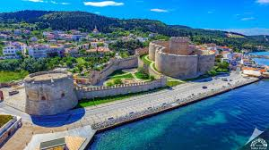
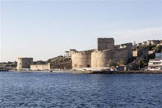

Fatih Sultan Mehmet tarafından Çimenlik Kalesi'nin karşısına yaptırılmıştır. Kalenin yapılış amacı daha çok boğazın güvenliğini/gemi geçişlerinin denetimini sağlamak ve gelebilecek saldırıları engellemekti
 
"Çanakkale"ye dönmek için basın